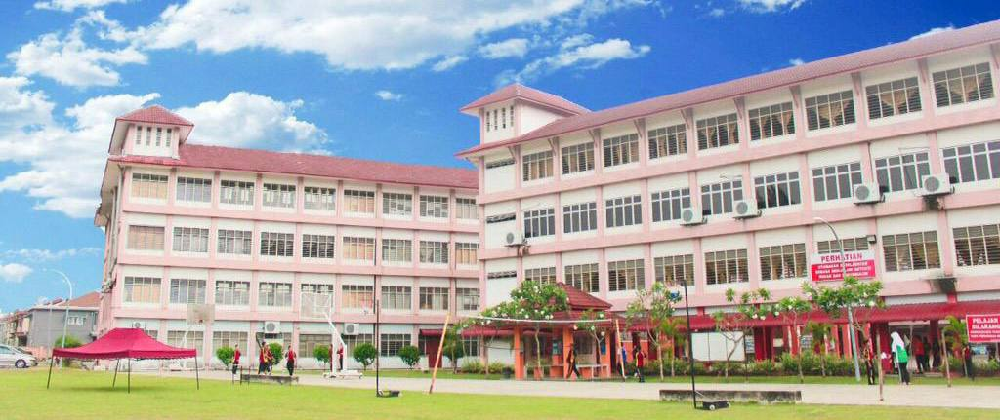
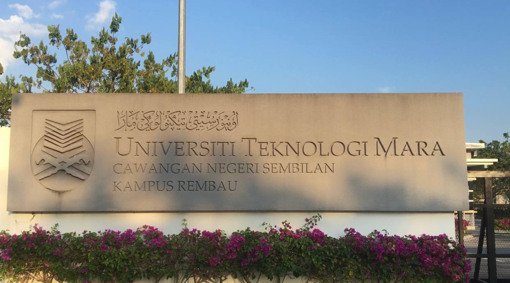

It is general knowledge in Malaysia that children begin school at the age of 5. I received my education in a kindergarten school close to where I reside when I was 5 to 6 years old. I started school at Sekolah Kebangsaan Kampung Jawa in Klang when I was seven years old and stayed there until I was twelve years old. Because of my academic performance and personality, I was appointed as a library supervisor when I was nine years old. However, I only managed to get 3A and 2B on the Ujian Penilaian Sekolah Rendah.
After that, I continued my studies at Sekolah Menengah Kebangsaan Shahbandaraya, also in Klang, where my grades were initially good but my PT3 marks were moderate. So in grades 4 & 5 I took the literary stream. What I can conclude from this is that the division between leisure time and study time is critical. Still, to me the fondest memories are of being in high school. Those five years were a very meaningful period in my life because at that time not only me, but others went through the process of becoming an adult. I have been through various experiences of love and grief.
Currently, I am taking a Diploma in Information Management at Universiti Teknologi MARA. I am in the last semester to finish my diploma. As we all know that the world was attacked with the Covid-19 epidemic at the end of 2019. Meanwhile, we all had to restrict movement to curb the epidemic. With that, I had to run online learning for almost 2 years. However, it is not a barrier for me to give my best in my learning. At the beginning of the semester I failed to get the Dean's Award, but the following semester I managed to get the Dean's Award each semester. Although I have already missed the opportunity to get the Vice Chancellor’s Award, but I hope that I succeed in graduating with first class.